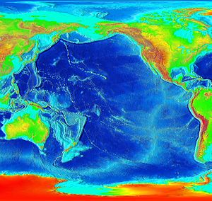
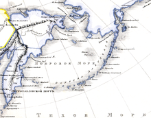

Физико-географическая характеристика
Общие сведения
Занимающий 49,5 % поверхности Мирового океана и вмещающий 53 % объёма его воды, Тихий океан является самым большим океаном планеты. С востока на запад океан простирается более чем на 19 тысяч км и на 16 тысяч — с севера на юг. Его воды расположены большей частью на южных широтах, меньшей — на северных.
В 1951 году английская экспедиция на научно-исследовательском судне «Челленджер» с помощью эхолота зафиксировала максимальную глубину 10 863 метра. По результатам измерений, проведённых в 1957 году во время 25-го рейса советского научно-исследовательского судна «Витязь» (руководитель Алексей Дмитриевич Добровольский), максимальная глубина жёлоба — 11 023 м (уточнённые данные, первоначально сообщалась глубина 11 034 м). Трудность измерения состоит в том, что скорость звука в воде зависит от её свойств, которые различны на разных глубинах, поэтому эти свойства также должны быть определены на нескольких горизонтах специальными приборами (такими, как барометр и термометр), и в значение глубины, показанное эхолотом, внесена поправка. Исследования 1995 года показали, что она составляет около 10 920 м, а исследования 2009 года — что 10 971 м. Последние исследования 2011 года дают значение — 10 994 м с точностью ±40 м. Таким образом, глубочайшая точка впадины, именуемая «Бездной Челленджера» (англ. Challenger Deep) находится дальше от уровня моря, чем гора Джомолунгма — над ним.
Своим восточным краем океан омывает западные побережья Северной и Южной Америки, своим западным краем он омывает восточные побережья Австралии и Евразии, а с юга омывает Антарктиду. Границей с Северным Ледовитым океаном является линия в Беринговом проливе от мыса Дежнёва до мыса Принца Уэльского. Границу с Атлантическим океаном проводят от мыса Горн по меридиану 68°04’ з. д. или по кратчайшему расстоянию от Южной Америки до Антарктического полуострова через пролив Дрейка, от острова Осте до мыса Штернек. Граница с Индийским океаном проходит: южнее Австралии — по восточной границе Бассова пролива до острова Тасмания, далее по меридиану 146°55’ в. д. до Антарктиды; севернее Австралии — между Андаманским морем и Малаккским проливом, далее по юго-западному берегу острова Суматра, Зондскому проливу, южному берегу острова Ява, южным границам морей Бали и Саву, северной границе Арафурского моря, юго-западному берегу Новой Гвинеи и западной границе Торресова пролива. Иногда южную часть океана, с северной границей от 35° ю. ш. (по признаку циркуляции воды и атмосферы) до 60° ю. ш. (по характеру рельефа дна), относят к Южному океану.
Моря
Площадь морей, заливов и проливов Тихого океана составляет 31,64 миллиона км² (18 % от общей площади океана), объём 73,15 миллиона км³ (10 %). Большая часть морей находится в западной части океана вдоль Евразии: Берингово, Охотское, Японское, Внутреннее Японское, Жёлтое, Восточно-Китайское, Филиппинское; моря между островами Юго-Восточной Азии: Южно-Китайское, Яванское, Сулу, Сулавеси, Бали, Флорес, Саву, Банда, Серам, Хальмахера, Молуккское; вдоль побережья Австралии: Новогвинейское, Соломоново, Коралловое, Фиджи, Тасманово; у Антарктиды находятся моря (иногда их относят к Южному океану): Дюрвиля, Сомова, Росса, Амундсена, Беллинсгаузена. Вдоль Северной и Южной Америки нет морей, но располагаются крупные заливы: Аляскинский, Калифорнийский, Панамский.
Острова
Несколько тысяч островов, разбросанных по Тихому океану, были образованы вулканическими извержениями. Некоторые из этих островов обрастали кораллами, и в конечном итоге острова снова погружались в море, оставляя после себя коралловые кольца — атоллы.
По количеству (около 10 тысяч) и общей площади островов Тихий океан занимает среди океанов первое место. В океане находятся второй и третий по величине острова Земли: Новая Гвинея (829,3 тысячи км²) и Калимантан (735,7 тысячи км²); крупнейшая группа островов: Большие Зондские острова (1485 тысяч км²). Другие крупнейшие острова и архипелаги:
- в Азии: Командорские острова, Сахалин, Курильские острова, Японские острова (Хонсю, Хоккайдо, Кюсю, Сикоку, острова Рюкю), Тайвань, Хайнань, Филиппинские острова (Лусон, Минданао, Самар, Негрос, Палаван, Панай, Миндоро), Большие Зондские острова (Суматра, Калимантан, Ява, Сулавеси, Банка), Малые Зондские острова (Тимор, Сумбава, Флорес, Сумба, Бали);
- в Океании: Молуккские острова (Серам, Хальмахера), Новая Гвинея, архипелаг Бисмарка (Новая Британия, Новая Ирландия), Соломоновы острова (Бугенвиль), Новые Гебриды, Новая Каледония, острова Луайоте, острова Фиджи (Вити-Леву, Вануа-Леву), Каролинские острова, Марианские острова, Маршалловы острова, острова Гилберта, острова Тувалу, острова Тонга, архипелаг Самоа, острова Кука, острова Общества, острова Туамоту, Новая Зеландия (Южный и Северный острова), Гавайские острова (Гавайи);
- в Северной Америке: Святого Лаврентия, Алеутские острова, архипелаг Александра, Острова Королевы Шарлотты, Ванкувер;
- в Южной Америке: Галапагосские острова, Чилийский архипелаг (Чилоэ), Огненная Земля (Огненная Земля);
- в Антарктиде: Земля Александра I, Палмер, Южные Шетландские острова.
История формирования океана
При распаде проконтинента Пангея в мезозойскую эру на Гондвану и Лавразию окружающий его океан Панталасса начал уменьшаться в площади. К концу мезозоя Гондвана и Лавразия разделились, и по мере расхождения их частей начал образовываться современный Тихий океан. В пределах тихоокеанской впадины в юрский период развились четыре полностью океанские тектонические плиты: Тихоокеанская, Кула, Фараллон и Феникс. Северо-западная плита Кула поддвигалась под восточную и юго-восточную окраины Азиатского материка. Северо-восточная океаническая плита Фараллон поддвигалась под Аляску, Чукотку и под западную окраину Северной Америки. Юго-восточная океаническая плита Феникс погружалась под западную окраину Южной Америки. В меловое время юго-восточная Тихоокеанская океаническая плита продвигалась под восточную окраину единого тогда Австрало-Антарктического материка, в результате чего от материка откололись блоки, образующие ныне Новозеландское плато и подводные возвышенности Лорд-Хау и Норфолк. В позднем мелу начался раскол Австрало-Антарктического материка. Австралийская плита отделилась и начала двигаться в сторону экватора. При этом в олигоцене Тихоокеанская плита сменила направление на северо-западное. В позднем миоцене плита Фараллона разделилась на две: Кокос и Наска. Плита Кула, двигаясь на северо-запад, целиком погрузилась (вместе с северной окраиной Тихоокеанской плиты) под Евразию и под прото-Алеутский жёлоб.
Сегодня движение тектонических плит продолжается. Осью этого движения являются срединно-океанические рифтовые зоны в Южно-Тихоокеанском и Восточно-Тихоокеанском поднятиях. К западу от этой зоны располагается самая большая плита океана Тихоокеанская, которая продолжает движение на северо-запад со скоростью 6—10 см в год, подползая под Евразийскую и Австралийскую плиты. На западе Тихоокеанская плита подталкивает Филиппинскую плиту к северо-западу под Евразийскую плиту со скоростью 6—8 см в год. К востоку от срединно-океанской рифтовой зоны располагаются: на северо-востоке плита Хуан де Фука, подползающая со скоростью 2—3 см в год под Северо-Американскую плиту; в центральной части плита Кокос поддвигается в северо-восточном направлении под Карибскую литосферную плиту со скоростью 6—7 см в год; южнее находится плита Наска, движущаяся на восток, погружаясь под Южно-Американскую плиту со скоростью 4—6 см в год.
Геологическое строение и рельеф дна
Подводные окраины материков
Подводные окраины материков занимают 10 % территории Тихого океана. На рельефе шельфа выражены черты трансгрессивных равнин с субаэральным реликтовым рельефом. Такие формы характерны для подводных речных долин на Яванском шельфе и для шельфа Берингова моря. На Корейском шельфе и шельфе Восточно-Китайского моря распространены грядовые формы рельефа, образованные приливными течениями. На шельфе экваториально-тропических вод распространены различные коралловые постройки. Большая часть Антарктического шельфа лежит на глубинах более 200 м, поверхность очень расчленена, подводные возвышенности тектонического характера чередуются с глубокими депрессиями — грабенами. Материковый склон Северной Америки сильно расчленён подводными каньонами. Крупные подводные каньоны известны на материковом склоне Берингова моря. Большой шириной, разнообразием и расчленённостью рельефа отличается материковый склон Антарктиды. Вдоль Северной Америки материковое подножие выделяется очень крупными конусами выноса мутьевых потоков, сливающимися в единую наклонную равнину, окаймляющую широкой полосой материковый склон.
Подводная окраина Новой Зеландии имеет своеобразную материковую структуру. Её площадь в 10 раз превышает площадь самих островов. Это подводное Новозеландское плато состоит из плосковершинных поднятий Кэмпбел и Чатам и впадины Баунки между ними. Со всех сторон оно ограничено материковым склоном, окаймляемым материковым подножьем. Сюда относят и позднемезозойский подводный хребет Лорд-Хау.
Переходная зона
По западной окраине Тихого океана расположены переходные области от окраин материков к ложу океана: Алеутская, Курило-Камчатская, Японская, Восточно-Китайская, Индонезийско-Филиппинская, Бонинско-Марианская (с самой глубокой точкой океана — Марианским жёлобом, глубина 11 022 м), Меланезийская, Витязевская, Тонга-Кермадекская, Маккуори. Эти переходные области включают в себя глубоководные желоба, окраинные моря, ограниченные островными дугами. По восточной окраине расположены переходные области: Центрально-Американская и Перуанско-Чилийская. Они выражены только глубоководными жёлобами, а вместо островных дуг вдоль жёлобов протягиваются молодые скалистые горы Центральной и Южной Америки.
Всем переходным областям присущ вулканизм и высокая сейсмичность, они образуют окраинный Тихоокеанский пояс землетрясений и современного вулканизма. Переходные области на западной окраине Тихого океана располагаются в виде двух эшелонов, наиболее молодые по стадии развития области расположены на границе с ложем океана, а более зрелые отделяются от ложа океана островными дугами и островными массивами суши с материковой земной корой.
Климат
Климат Тихого океана формируется за счёт зонального распределения солнечной радиации и циркуляции атмосферы, а также мощного сезонного влияния Азиатского материка. В океане можно выделить почти все климатические зоны. В северной умеренной зоне в зимнее время барическим центром является Алеутский минимум давления, слабо выраженный в летнее время. Южнее располагается Северо-Тихоокеанский антициклон. Вдоль экватора отмечается Экваториальная депрессия (область пониженного давления), которая южнее сменяется Южно-Тихоокеанским антициклоном. Далее на юг давление вновь понижается и затем снова сменяется областью высокого давления над Антарктидой. В соответствии с расположением барических центров формируется направление ветра. В умеренных широтах северного полушария зимой преобладают сильные западные ветры, а летом — слабые южные. На северо-западе океана в зимнее время устанавливаются северные и северо-восточные муссонные ветры, которые летом сменяются южными муссонами. Циклоны, возникающие на полярных фронтах, определяют большую повторяемость штормовых ветров в умеренных и приполярных зонах (особенно в южном полушарии). В субтропиках и тропиках северного полушария господствуют северо-восточные пассаты. В экваториальной зоне круглый год наблюдается преимущественно штилевая погода. В тропической и субтропической зонах южного полушария господствует устойчивый юго-восточный пассат, сильный зимой и слабый летом. В тропиках зарождаются (главным образом летом) жестокие тропические ураганы, здесь называемые тайфунами. Обычно они возникают восточнее Филиппин, откуда движутся на северо-запад и север через Тайвань, Японию и затухают на подступах к Берингову морю. Другая область зарождения тайфунов — прибрежные районы Тихого океана, прилегающие к Центральной Америке. В сороковых широтах южного полушария наблюдаются сильные и постоянные западные ветры. В высоких широтах южного полушария ветры подчинены общей циклонической циркуляции, свойственной приантарктической области низкого давления.
Общей широтной зональности подчинено распределение температуры воздуха над океаном, но западная часть имеет более тёплый климат, чем восточная. В тропических и экваториальной зонах преобладают средние температуры воздуха от 27,5 °C до 25,5 °C. В летнее время изотерма 25 °C расширяется к северу в западной части океана и лишь в небольшой степени в восточной, а в южном полушарии сильно сдвигается на север. Проходя над огромными просторами океана, воздушные массы интенсивно насыщаются влагой. По обе стороны от экватора в приэкваториальной зоне отмечаются две узкие полосы максимума осадков, очерченные изогиетой 2000 мм, а вдоль экватора выражена относительно засушливая зона. В Тихом океане нет зоны сходимости северных пассатов с южными. Возникают две самостоятельные зоны с избыточным увлажнением и разделяющая их относительно засушливая зона. К востоку в экваториальной и тропической зонах количество осадков уменьшается. Наиболее засушливые области в северном полушарии прилегают к Калифорнии, в южном — к Перуанской и Чилийской котловинам (прибрежные районы получают менее 50 мм осадков в год).
История именования
Первый европеец, увидевший восточный берег океана, Нуньес де Бальбоа, вышел к океану в 1513 году в Панамском заливе, открытом к югу, поэтому назвал открывшееся водное пространство Южным морем.
28 ноября 1520 года в открытый океан вышел Фернан Магеллан, за время перехода от Огненной Земли до Филиппинских островов не встретил ни одного шторма и назвал океан Тихим.
В 1753 году французский географ Жан-Никола Бюаш предложил называть его Великим океаном как самый большой из океанов. Но это имя не получило всеобщего признания, и господствующим в мировой географии остаётся название Тихий океан. В англоязычных странах океан называют Pacific Ocean.
До 1917 года на русских картах употреблялись названия Тихое Море (1833) и Восточный океан, сохранившиеся по традиции со времени выхода к океану русских землепроходцев.
Названия в честь океана
Астероид (224) Океана назван в честь Тихого океана.